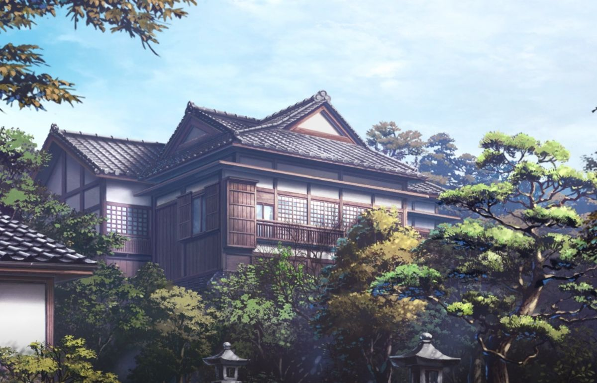

Résidence de Shinobu Kocho
Entrez dans
le Domaine
Chaque aile mène à une facette de Shinobu : son histoire, son esprit, sa science, ses liens et la lame empoisonnée qui porte sa volonté.
Sélectionnez un papillon du cercle
Shinobu Kocho
Chaque aile mène à une facette de Shinobu : son histoire, son esprit, sa science, ses liens et la lame empoisonnée qui porte sa volonté.
Une vie façonnée par la perte, l’héritage de Kanae et une préparation silencieuse dirigée vers un unique adversaire.

Après la mort de leurs parents, Shinobu et Kanae sont sauvées par Gyomei Himejima, puis choisissent de rejoindre le Corps des Pourfendeurs.
La disparition de sa sœur transforme profondément Shinobu. Elle adopte son sourire et tente de porter son souhait de coexistence, malgré une colère qu’elle ne parvient pas à éteindre.
Shinobu devient Pilier de l’Insecte, dirige le Domaine des Papillons et met ses connaissances médicales au service des pourfendeurs blessés.
Consciente de ses limites physiques, elle construit patiemment une stratégie fondée sur la glycine et sur sa propre capacité à devenir l’ultime poison.
Sa politesse, son sourire et sa voix légère forment une surface élégante. Sous celle-ci persistent la lucidité, la douleur et une détermination presque cruelle.
Elle s’exprime avec calme et conserve une présence rassurante, même lorsqu’elle menace un démon avec une précision glaçante.
Sa haine des démons est profondément liée à la perte de Kanae. Son sourire devient une discipline et une armure.
Observation, médecine et préparation remplacent la force brute. Shinobu transforme chaque faiblesse en méthode.
Elle soigne, enseigne et protège les membres du Corps, particulièrement ceux qui passent par le Domaine.
Son humour délicat peut devenir déstabilisant. Elle utilise les mots comme elle utilise son dard : avec précision.
Une fois sa décision prise, elle accepte même un sacrifice total afin que son plan puisse atteindre son objectif.
Shinobu ne possède pas la force nécessaire pour décapiter un démon. Elle a donc créé un style reposant sur la vitesse, l’estoc, la précision et le poison.
Ses accélérations soudaines donnent l’impression d’un papillon qui disparaît avant l’impact.
Sa Nichirin est conçue pour perforer plutôt que trancher, injectant le poison directement dans le corps du démon.
Elle modifie ses préparations et évalue rapidement leur effet afin d’ajuster son approche.
Chaque mouvement vise un point précis et limite les gestes inutiles.
Elle observe la régénération et les réactions de son adversaire pendant le combat.
Sa plus grande arme n’est pas seulement sa lame, mais la préparation réalisée bien avant le début de l’affrontement.
Une dérivation du Souffle de la Fleur, conçue pour imiter la légèreté, la trajectoire et les attaques perforantes des insectes.
Une série d’approches légères et d’estocs rapides destinés à injecter le poison.
Une charge rectiligne d’une grande vitesse visant un point vital.
Six attaques successives visant différentes zones du corps adverse.
Une accélération en trajectoire sinueuse qui déroute l’ennemi avant l’estoc final.
Survolez les noms. Chaque lien éclaire une partie différente du cœur de Shinobu.
Un lieu de repos, de soin et de reconstruction. Derrière ses couloirs paisibles se trouvent aussi les recherches et les souvenirs de Shinobu.

Les pourfendeurs y reçoivent les traitements nécessaires après leurs missions.
Entraînements respiratoires, récupération physique et exercices supervisés rythment la convalescence.
La glycine protège, soigne symboliquement et rappelle la frontière fragile entre beauté et poison.
Une zone plus secrète consacrée aux observations et aux préparations de Shinobu.
Dossiers médicaux, rapports et souvenirs y sont conservés loin des regards.
Le Domaine devient un foyer pour Kanao, Aoi et les jeunes assistantes qui y vivent.
Une interface fictive inspirée de l’univers de Demon Slayer. Les informations restent narratives et ne constituent aucune instruction réelle.
Usage narratif : base des poisons utilisés par Shinobu contre les démons.
Méthode : adaptation fictive du dosage selon la résistance observée.
Limite : les démons puissants peuvent décomposer ou neutraliser progressivement un poison insuffisant.
Note : aucune formule réelle n’est présentée.
Shinobu laisse derrière elle bien davantage qu’une technique : une volonté transmise, un domaine vivant et une victoire rendue possible par la confiance.
Elle transmet à Kanao un foyer, une formation et la possibilité de choisir avec son propre cœur.
Son travail médical continue d’influencer la manière dont le Corps protège ses membres.
Son plan repose sur une confiance absolue envers ceux qui poursuivront le combat après elle.